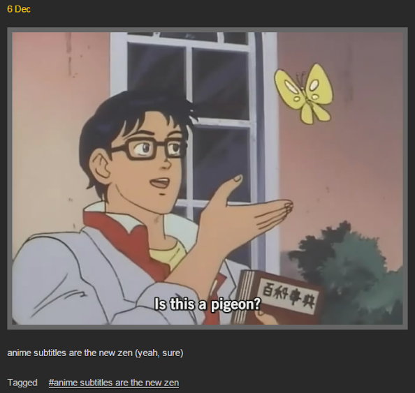

"Is this a pigeon?" is a memorable quote said by the protagonist character from the 1990s Japanese anime TV series The Brave Fighter of Sun Fighbird in a scene wherein the humanoid character erroneously identifies a butterfly as a pigeon. On Tumblr, the quote, along with a reaction image of the scene featuring the English-translated subtitle, is widely used to express utter confusion.
The still shot originates from Season 1, Episode 3 of The Brave Fighter of Sun Fighbir (太陽の勇者ファイバード) (or simply Fighbird), which first premiered in Japan in February 1991, in a scene where Yutaro Katori, a human android created by professor Hiroshi Amano, misidentifies a butterfly as a pigeon while studying the earthly nature. In addition to mistaking a pigeon for a butterfly, Katori also confuses Rosaceae with Violaceae (shown below). On Tumblr, the quote has been occasionally misinterpreted as an example of transcription FAIL, however, it is the direct translation of the original line in verbatim:
On December 6th, 2011, the image was uploaded for the first time by Tumblr user Indizi dell'avvenuta catastrofe, which managed to gain more than 111,000 notes over the next three years.
On December 11th, the picture was posted on AnimeUltima.tv website and Funny Pics. On November 23th, 2012, the picture was also included in Smosh's article titled "22 Hysterical Anime Screencaps," ranked in the second place. On June 27th, 2013, Buzzfeed highlighted the image in a compilation article titled "27 Subtitles That Have Gone Awesomely Wrong," which misattributed Katori's quote as a fan-translation FAIL. On TV Tropes, "Is this a pigeon?" is noted as a 'Photo reply to any picture showing a butterfly' in Tumblr's Meme section. Additional examples can also be found on Tumblr through the #is-this-a-pigeon hashtag.